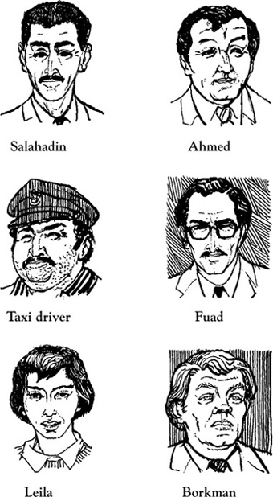
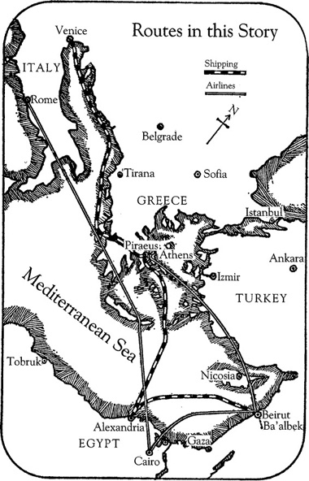

Listen to Part 1:
Your browser does not support the audio element.

Sáng hôm qua, một nhà khảo cổ đã được tìm thấy tử vong tại một khách sạn ở Cairo.
Nhà khảo cổ tên là Pearson.
Cảnh sát đang tiến hành điều tra.
